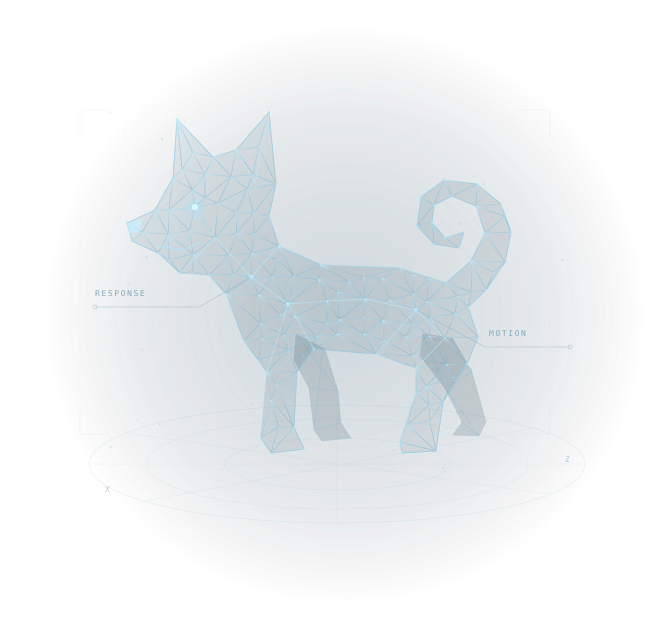

01
関係性を理解する
人とペットの自然なやりとりから、しぐさや反応に込められたつながりを読み解く。
HUMAN–PET INTERACTIONVIRTUAL COMPANIONS. REAL CONNECTIONS.
しぐさに応え、同じ時間を過ごす。人とペットの関係から学び、心が通うデジタルパートナーをつくる。それが、CanisARの目指す未来です。

画面の向こうに、ただのキャラクターではなく、あなたに応える存在を。
手を伸ばす。目が合う。そばにいる。人とペットの何気ないやりとりには、つながりを感じるための豊かな手がかりがあります。私たちはその関係性を研究し、日々の暮らしに寄り添うデジタル体験へとつなげていきます。
人とペットの自然なやりとりから、しぐさや反応に込められたつながりを読み解く。
HUMAN–PET INTERACTION人の動きや働きかけに応える、自然で表情豊かなペットの動作生成を探求する。
MOTION GENERATION研究の知見をバーチャルペットへ。一緒にいる感覚を、日常の中で触れられる体験にする。
VIRTUAL COMPANIONS自然なふれあいを捉え、理解し、生成する。私たちの探求は、実世界のインタラクションから始まります。
A Multimodal 4D Human-Pet Interaction Dataset for Pet Motion Generation
人と犬の自然なインタラクションを記録したマルチモーダルデータセット。映像・姿勢・メッシュ・音声を通じて、関係性を動きから捉えます。
InterPetMoGen：人の動きに応じたペットの動作生成も探求しています。
出典：InterPet4D, arXiv:2607.10287（2026）LET’S BUILD WHAT’S NEXT.
共同研究、技術開発、バーチャルペットの新しい可能性。私たちのビジョンを共有する皆さまと、未来の体験をつくっていきたいと考えています。
お問い合わせ窓口は近日公開予定です。